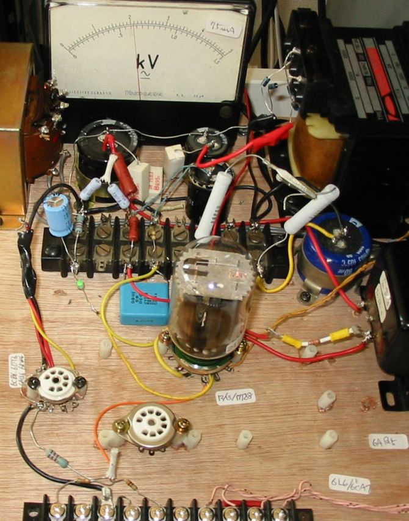
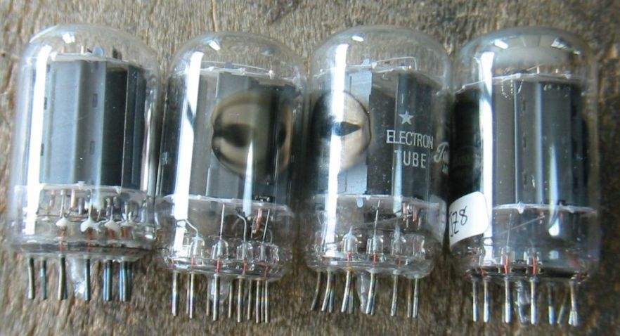
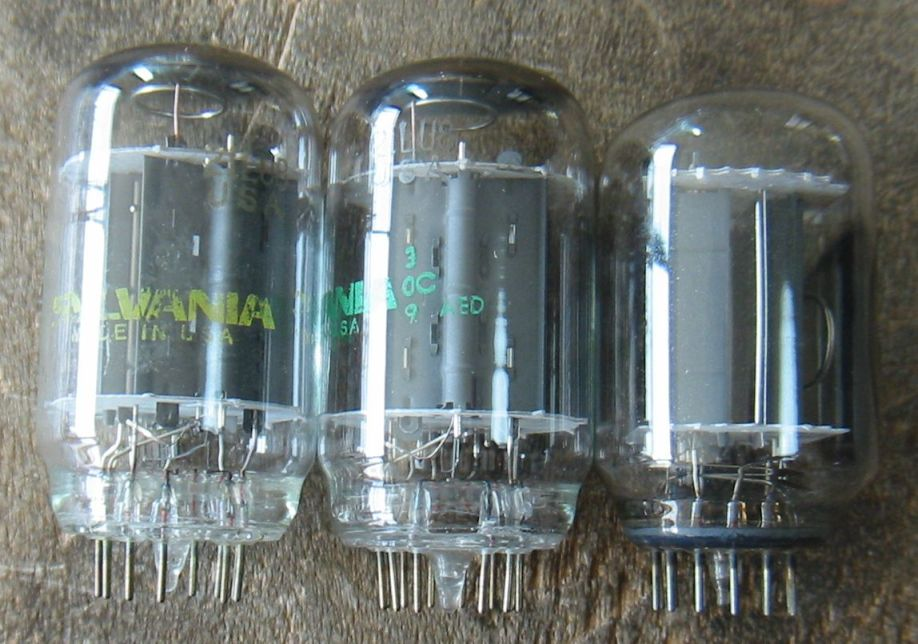
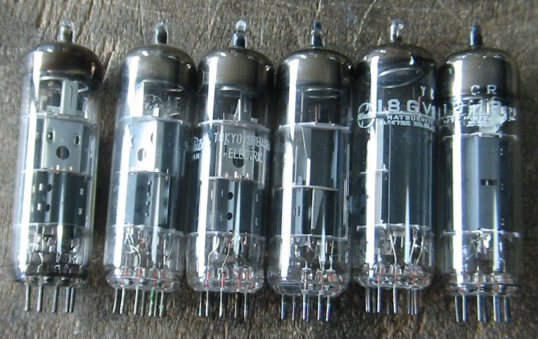

6LU8、6JZ8や18GV8など小型のコンパクトロンとミニチュア管をオーディオで使ってみます。
シングルエンドの6L6、6CA7などで使用したアンプを6JZ8や6LU8などのコンパクトロンをテストできるよう
に改造しました。
下の写真では21LU8を1本だけ使用したアンプで出力段は3結です。
電流計はフルスケール75mAに改造したので、出力段のカソード電流は約32mAということになります。

トランスレス用真空管のヒーター電圧に関する1考察
このアンプを組み立ててゆく途中で13JZ8を何げなくヒーター電圧6.3Vで点灯してみたのですが、
結構な明るさになり、カソード電流が50mAも流れたので、急いで電源を切ったことがありました。
カソードバイアスの抵抗を大きくして、30mA位流れるようにして、ヒーター電圧を12Vにして落ち着いた
わけですが、このヒーター電圧のことが気になったので調べてみたのです。
以前からヒーター電圧は低めで使うのが好きで、無線機のファイナルは別として、6.3Vの球は6.0以下で
も問題ないのは知っていました。最近になってTV球をオーディオで使ってみようとしていろいろ試作している
過程で、ヒーター電圧50Vの球が、35Vで全く問題なく動作することがわかったりして来ました。
しかし、13JZ8が50%のヒーター電圧で動作するのにはびっくりです。
12JZ8を2本取り出してヒーター電圧とカソード電流の関係を測定しました。球はメーカの違う中古です。
| ヒーター電圧(V) | 13.8 | 12.6 | 10.1 | 8.8 | 7.6 | 6.3 | 5.0 |
| サンプル1カソード電流(mA) | 35 | 35 | 35 | 34 | 31 | 23V | 9 |
| サンプル2カソード電流(mA) | 34 | 34 | 32 | 30 | 29 | 24 | 7 |
球による個体差とか測定器の誤差はありますが、だいたいの傾向はわかると思います。
カソード電流が減少してゆくと当然Gmが下がり、内部抵抗が上がります。
球の性能をぎりぎりまで発揮させたい場合などを除いて、かなりおおざっぱでよいということになります。
ということで、いろいろなヒータ電圧のトランスレス用真空管を楽しむことができます。
ヒータトランスがないので、おもしろそうな球があるのに使わないでいるよりずっと良いと思います
しかし、規格より高いヒーター電圧で使うのは、寿命が短くなるのが明らかなので、おすすめしません。
実際に17JZ8を12Vで何日か使ってみましたが何も問題有りませんでした。
今は??ZJ8より一回り大きい21LU8を17Vで使っています。
カソードに何か悪影響が？私の余命から考えて、生きている内に何かおきそうな気はしません。
2010/11/07
6JZ8/13JZ8/17JZ8です。6BM8のコンパクトロン管

6LU8/16LU8/21LU8です。6JZ8を大きくしたような球

18GV8/PCL85です。3極部が小さく最適化されているのが特徴であり、許容損失が0.5ワットなので
気をつける必要があります。このアンプでは1mAも流れないのでその問題はありません。
こうして小さい球をいじっていると、これでも私の部屋では十分な音量ということがあり、だんだんやることが
小さくなってゆくような感じがします。

2010/11/09
back to top
back to home page